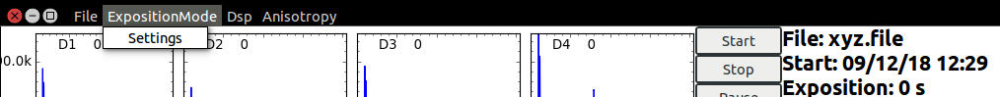

Таким образом при первоначальном включении спектрометра необходимо выполнить следующие процедуры для запуска накопления:
Провести инициализацию параметров ПЛИС
Задать параметры экспозиции
Провести запуск экспозиции
В том случае, если питание спектрометра не выключалось и процедуры прошивки и инициализации были выполнены ранее, то первые три пункта можно пропустить.
Загрузка прошивки в ПЛИС из ОС Windows XP
Запустите программу Impact
Кликните дважды по Boundary Scan в окне программы в левом верхнем меню
Кликните правой кнопкой мыши для добавления устройства в поле Boundary Scan справа
Выберите Initialize chain
Выберите прошивку ПЛИС
Одна из рабочих версий прошивки находится по адресу
E:/work/Proshivki/9253/Right/4poroga+count.bit
В открывшемся окне кликните Ok
Кликните правой кнопкой мыши на устройстве и выберите Program...
В появившемся окне кликните Ok. После нескольких секунд прошивка ПЛИС будет завершена и в поле Boundary Scan появится надпись на синем фоне Program Succeded
На этом процедура прошивки ПЛИС завершена. Программу Impact можно закрывать. Сохранять проект не надо.
Загрузка прошивки из ОС Linux
Запустите Terminal
Перейдите в каталог с пакетом програм Xilinx ISE:
cd ~/job/xilinx_soft/bin
Запустите программу impact:
impact
Далее последовательность действий такая же как в Windows XP. Иногда может потребоваться произвести поиск ПЛИС () два раза и/или переподключить USB кабель программатора ПЛИС к ПК.
Загрузка прошивки из OC Linux (с использованием графического интерфейса):
Запустите Terminal
Запустите программу Cypress USB control center набрав в Терминале команду:
cyusb_linux
и затем нажмите клавишу Enter
В Cypress USB control center выберите необходимый контроллер. Он должен иметь VID=04b4 и PID=8613
Выберите вкладку Program, владку FX2. Затем в списке Download to -> выберите пункт RAM, в списке Which RAM выберите пункт Internal
Нажмите на кнопку Select File и выберите необходимую прошивку USB контроллера
Одна из рабочих прошивок находится по адресу:
/home/das/job/dsp/firmwares/512x4.hex
Произведите загрузку прошивки в контроллер нажатием кнопки Start Download
В случае успешной прошивки появится диалоговое окно с текстом "Successfully downloaded"
В случае возникновения ошибки подробности об ошибке могут быть прочитаны в окне Терминала
После прошивки контроллер необходимо перезагрузить путем нажатия кнопки Reset Device в программе cyusb_linux
При этом PID контроллера в списке List of devices должен измениться и стать PID=00f1 (VID остается прежним)
Загрузка прошивки из OC Linux (с использованием интерфейса терминала):
Откройте Terminal
В терминале наберите следующую команду:
download_fx2 ...
Эта команда запускает программу download_fx2, которая загружает прошивку 512x4.hex в USB контроллер с VID=04b4 и PID=8613
Запустите Terminal
Запустите программу dsppac набрав в Терминале команду:
dsppac
и затем нажмите клавишу Enter
Для настройки параметров ПЛИС выберите в верхнем меню программы ExpositionMode -> Settings

В появившемся окне выставите значения порога для каждого из четырех детекторов и напротив полей с порогами нажмите кнопку Set porog
Выставите значение времени совпадений и напротив соответствующего поля нажмите кнопку Set time of coinc. После этого нажмите кнопку Reset
Для выбора режима накопления с совпадениями или без совпадений нажмите кнопку Coinc on или Coinc off, соответственно. После этого нажмите кнопку Reset.